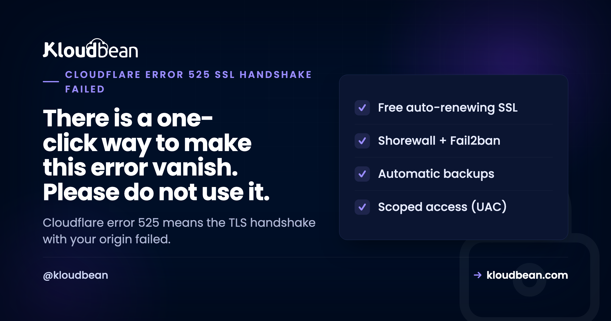

SSL Handshake Failed, Error Code 525: The Real Fix (Not Flexible Mode)

Error 525 means the TLS handshake between Cloudflare and your origin server failed. Visitors reach Cloudflare fine, Cloudflare reaches your server fine, and then the two cannot agree on an encrypted connection so nothing gets through. Search for a fix and you will quickly find advice to switch Cloudflare's SSL mode to Flexible, which does make the error disappear. It also stops encrypting the connection to your server and frequently creates a redirect loop. Worth understanding what is actually broken first.
Your origin needs a valid TLS certificate on port 443 that Cloudflare can complete a handshake with. Inspect what your server is really serving using openssl s_client with the -servername flag, then fix the gap: install a certificate if there is none, renew it if expired, open port 443 if it is closed, or update the TLS versions and ciphers your server offers. The clean answer for most sites is a free Cloudflare Origin CA certificate on the origin plus Full (strict) mode. Do not use Flexible.
See what your origin is actually serving
Almost every 525 is resolved by this one command. It asks your origin for its certificate the same way Cloudflare does:
# Replace with your origin IP and hostname
echo | openssl s_client -connect 203.0.113.10:443 -servername example.com 2>/dev/null \
| openssl x509 -noout -subject -issuer -dates
# Is anything listening on 443 at all?
nc -vz 203.0.113.10 443The -servername flag matters more than it looks. It sends SNI, telling the server which hostname you want. Without it you get whatever default certificate the server serves, which may be completely different from the one your site should use. Plenty of 525s are caused by exactly that mismatch, and testing without SNI hides it.
Read three things from the output. The subject should match your hostname, including whether a wildcard actually covers the subdomain you are using. The notAfter date should be in the future. The issuer tells you whether it is a publicly trusted certificate, a Cloudflare Origin CA certificate, or self-signed.
If the command returns nothing at all, the problem is not the certificate. Nothing is listening on 443, or a firewall is blocking it, and you should read the error 521 guide instead.
Understand the SSL modes before changing them
Cloudflare's SSL setting controls the leg between Cloudflare and your server, and choosing wrongly here is the source of most 525 confusion.
| Mode | Visitor to Cloudflare | Cloudflare to origin | Verdict |
|---|---|---|---|
| Off | Plain HTTP | Plain HTTP | No. |
| Flexible | Encrypted | Not encrypted | Hides 525, creates redirect loops, leaves traffic in the clear |
| Full | Encrypted | Encrypted, certificate not verified | Acceptable stopgap |
| Full (strict) | Encrypted | Encrypted and verified | What you should be running |
Notice which modes can even produce a 525. Off and Flexible never do, because Cloudflare never attempts TLS to your origin. That is precisely why switching to Flexible appears to fix it. The handshake stops failing because it stops happening.
Why Flexible mode is a trap
Two consequences, and the second one is what usually brings people back a day later.
First, the connection between Cloudflare and your server is unencrypted. Visitors see a padlock and believe the connection is secure end to end. It is not. For anything handling logins, payments, or personal data, that is a meaningful problem, not a technicality.
Second, the redirect loop. Most servers are configured to redirect HTTP to HTTPS, which is correct. Under Flexible mode, Cloudflare requests your page over plain HTTP. Your server responds with a redirect to HTTPS. Cloudflare follows it, and because Flexible means plain HTTP to origin, it asks over HTTP again. Your server redirects again. Visitors get ERR_TOO_MANY_REDIRECTS and you have traded a clear TLS error for a much more confusing one.
# Confirm a redirect loop
curl -sIL --max-redirs 10 https://example.com | grep -E "^HTTP|^location"My position: treat Flexible as a diagnostic, not a setting. If flipping to Flexible resolves the outage, you have confirmed the problem is TLS between Cloudflare and your origin. Note that, flip it back, and go and fix the certificate.
The fix that works for almost everyone
Install a Cloudflare Origin CA certificate on your server and set the mode to Full (strict). Cloudflare issues these free, they are valid for years rather than months, and they are trusted specifically by Cloudflare for origin connections. Because renewal is not a monthly concern, this removes a whole category of recurring failure.
Generate one in the Cloudflare dashboard under SSL/TLS, then Origin Server, then Create Certificate. Install the certificate and key on your server:
sudo install -m 644 origin-cert.pem /etc/ssl/certs/cf-origin.pem
sudo install -m 600 origin-key.pem /etc/ssl/private/cf-origin.keyPoint nginx at them:
server {
listen 443 ssl;
http2 on;
server_name example.com www.example.com;
ssl_certificate /etc/ssl/certs/cf-origin.pem;
ssl_certificate_key /etc/ssl/private/cf-origin.key;
ssl_protocols TLSv1.2 TLSv1.3;
ssl_prefer_server_ciphers off;
}sudo nginx -t && sudo systemctl reload nginxThen verify from outside before switching Cloudflare to Full (strict):
echo | openssl s_client -connect 203.0.113.10:443 -servername example.com 2>/dev/null \
| openssl x509 -noout -subject -issuer -datesOne caveat worth knowing: an Origin CA certificate is only trusted by Cloudflare, so if you ever bypass the proxy and hit the origin directly in a browser, it will warn you. That is expected and not a fault. If you need a certificate that is trusted by everyone at the origin, use a normal publicly trusted certificate instead.
The other causes, in order
The certificate expired. Check notAfter in the output above. If renewal is meant to be automatic and did not happen, find out why the renewal hook failed rather than just renewing by hand, because the same silence will repeat. Our SSL certificate errors guide covers the renewal failures in detail.
Port 443 closed to Cloudflare. If your firewall allows 80 but not 443, or only allows a fixed list of addresses that predates Cloudflare, the handshake never starts. Cloudflare's ranges need to be permitted on 443 specifically, not only 80.
TLS version too old. A server still offering only TLS 1.0 or 1.1 will fail against modern requirements. Set ssl_protocols TLSv1.2 TLSv1.3; and reload. Check what you currently offer:
for v in tls1 tls1_1 tls1_2 tls1_3; do printf "%-8s " "$v"; echo | openssl s_client -connect 203.0.113.10:443 -servername example.com -$v 2>/dev/null | grep -q "Cipher is" && echo supported || echo "not supported"; doneCipher mismatch. A hardened server can be restricted to such a narrow cipher list that no shared option remains. If someone tightened the TLS configuration recently and 525 appeared, widen it back to a sensible modern set rather than the most restrictive list you can find. Security configuration that takes the site offline is not a security win.
The wrong certificate for the hostname. Common with several sites on one server. If SNI is not configured correctly, your server hands out the first virtual host's certificate regardless of what was requested. The -servername test above is what exposes this, since the subject will not match the hostname you asked for.
| What the check shows | Cause | Fix |
|---|---|---|
| No output, connection refused | Nothing listening on 443, or firewall | Start TLS listener, allow Cloudflare on 443 |
notAfter in the past | Expired certificate | Renew, and fix the automation that missed it |
| Subject does not match hostname | Wrong certificate or SNI misconfigured | Correct the virtual host and certificate |
| Self-signed issuer, Full (strict) enabled | Certificate cannot be verified | Install an Origin CA certificate |
| Only old TLS versions supported | Outdated TLS configuration | Enable TLS 1.2 and 1.3 |
| Broke after a security hardening change | Cipher list too restrictive | Restore a sensible modern cipher set |
What this looks like when it is someone else's job
Every cause above is certificate and TLS operations: issuing, installing, renewing, keeping protocol configuration current, and remembering that the firewall needs 443 open to the proxy as well as 80. It is genuinely fiddly work, and the failure mode is a site that goes down without anyone changing anything, usually on the day a certificate expires.
On Kloudbean, free SSL is issued and renewed automatically, TLS configuration is maintained rather than left at whatever was current when the server was built, and Shorewall ships configured so the web ports are handled sensibly from the start. Cloudflare is available as a paid add-on and included for enterprise accounts, which is relevant here because the proxy and the origin get set up as one system, so the origin certificate and the SSL mode are consistent instead of being two settings that drifted apart.
Where the boundary sits: a platform cannot stop you selecting Flexible mode in your own Cloudflare dashboard, and it cannot fix a certificate for a domain whose DNS does not point at the server yet. What it does remove is expiry, renewal, and protocol maintenance.


SSL Handshake Failed, Error Code 525: related failures
For the whole family of these codes, see Cloudflare error codes 520 to 527, plus error 521 and error 520. On certificates generally, fixing SSL certificate errors and SSL and TLS explained. For setting up a custom domain and certificate from scratch, custom domain and SSL for your app. And for the records this all depends on, DNS explained.
Patched, firewalled, and backed up.
Every server ships with a Shorewall firewall and Fail2ban, free auto-renewing SSL, automatic backups, and OS patching handled. Add IP access control or a Basic Auth gate when a site should not be public.
- ✓ Shorewall firewall
- ✓ Fail2ban
- ✓ OS patching handled
- ✓ Free SSL
- ✓ IP access control
- ✓ Automatic backups
Plans from $8/mo · Free migration assistance · Free trial
FAQ
What does SSL handshake failed error code 525 mean?
It means Cloudflare reached your origin server but could not complete a TLS handshake with it. The connection itself worked, so this is not a firewall or routing problem in the usual sense. The cause is on the TLS layer: a missing, expired, or mismatched certificate, a closed port 443, or a protocol or cipher configuration your server and Cloudflare cannot agree on.
How do I fix error 525 properly?
Inspect the certificate your origin actually serves with openssl s_client -connect YOUR_IP:443 -servername yourdomain.com, then address what you find. For most sites the clean fix is installing a free Cloudflare Origin CA certificate on the server and setting SSL mode to Full (strict). Avoid switching to Flexible, which only stops Cloudflare attempting TLS at all.
Should I switch to Flexible SSL to fix a 525?
No. Flexible stops the error by stopping the encrypted connection to your server, so traffic between Cloudflare and your origin travels in plain text while visitors see a padlock. It also causes a redirect loop on any server that redirects HTTP to HTTPS, which is most of them. Use it briefly to confirm TLS is the problem, then switch back and fix the certificate.
What is a Cloudflare Origin CA certificate?
A free certificate issued by Cloudflare specifically for the connection between Cloudflare and your origin server. It is valid for years rather than months, which removes the renewal failures that cause recurring outages. Because only Cloudflare trusts it, a browser hitting your origin directly will warn you, which is expected behaviour rather than a fault.
Why does my certificate look valid but 525 still happens?
Often SNI. If you test without the -servername flag, your server hands back its default certificate, which can look perfectly valid while being the wrong one for your hostname. Re-run the check with -servername and compare the subject against the hostname you requested. This is common when several sites share one server.
Can a firewall cause error 525?
Yes, when port 443 specifically is blocked. A firewall that allows 80 but not 443, or one whose allow list predates Cloudflare, prevents the handshake from starting. Make sure Cloudflare's published address ranges are permitted on 443 as well as 80, since allowing only port 80 is a surprisingly common oversight.
Does error 525 mean my site is insecure for visitors?
Visitors are not getting an insecure connection, they are getting no connection, because Cloudflare will not serve a page it could not fetch. The risk arrives if you resolve it by switching to Flexible mode, which does leave the origin leg unencrypted while presenting a padlock to visitors. Fix the certificate and stay on Full (strict).